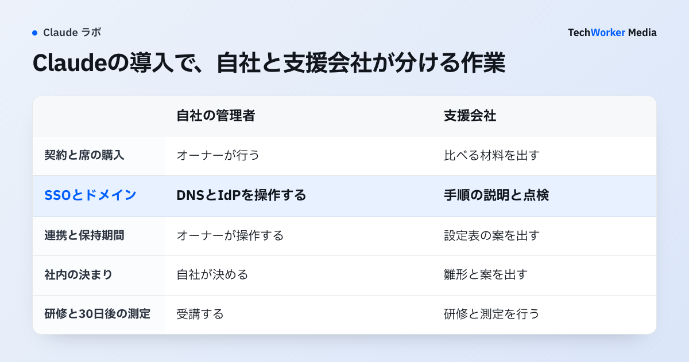
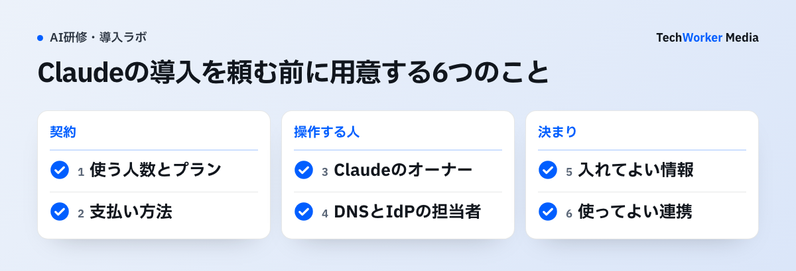

Claudeの導入支援・設定代行で頼めることは、管理者の作業ごとに分けて考えると決めやすくなります。作業は契約と席、ログイン、組織の設定、社内の決まり、研修の5つです。
- 権限の壁：SSO、連携の有効化、保持期間、監査ログ、請求は、オーナー以上の役割でないと扱えません。管理者（Admin）の役割でできるのは、メンバーの招待と削除などです。
- 自社に残すもの：オーナーの役割と、SSOに要るDNSとIdP（社員のIDを管理する仕組み）の操作です。どちらも、会社の契約と社員のIDの仕組みに直結します。
- 外へ出しやすいもの：設定の点検と直し方、社内の決まりの案、研修と効果の測定です。
AnthropicのヘルプセンターとClaudeの料金ページ（2026年11月17日確認）をもとに、自社でやる範囲と外へ出す範囲の分け方をまとめます。
Claudeの導入支援・設定代行では、何を頼めますか？
頼めるのは、設定の手順と点検、社内の決まりの案、研修です。設定の操作まで頼むかどうかは、どの役割を外部の人に渡すかで決まります。
Anthropicのヘルプはメンバーの管理と請求の権限を次のように分けています。
原文“Organization Admins can manage members in Organization settings > Members, but only Owners and Primary Owners can access Organization settings > Billing.”
日本語訳組織の管理者（Admin）は、組織の設定のメンバーの画面でメンバーを管理できます。請求の画面に入れるのは、オーナーとプライマリーオーナーだけです。
役割は利用者（User）、管理者（Admin）、オーナー（Owner）、プライマリーオーナー（Primary Owner）の4つです。プライマリーオーナーは1つの組織に1人だけで、席を1つ使います。
導入の作業は次の5つに分かれます。
- 契約と席：TeamかEnterpriseかを決め、席を買い、支払い方法を登録します。
- ログイン：会社のドメインを確認し、SSOで社員のIDから入れるようにします。
- 組織の設定：Google ドライブなどとの連携、データの保持期間、監査ログを決めます。
- 社内の決まり：入れてよい情報、使ってよい連携、困ったときの窓口を決めます。
- 研修と測定：使い方を教え、使われているかを測ります。
1から3は管理画面の操作で、4と5は人と決まりの仕事です。社内の決まりと研修は外へ頼みやすい作業です。契約と席、ログイン、組織の設定は、誰にどの役割を渡すかを先に決めます。
TeamとEnterpriseで、要る設定はどう違いますか？
SSOとドメインの確認は両方で使えます。SCIM、既存アカウントの取り込み、保持期間、監査ログはEnterpriseだけです。
| 設定 | Team | Enterprise | 操作できる役割 |
|---|---|---|---|
| SSO（社員のIDでログイン） | 使える | 使える | オーナー以上。DNSとIdPの権限も要る |
| ドメインの確認 | 使える | 使える | オーナー以上（DNSにTXTレコードを登録） |
| 既存の個人アカウントの取り込み | 使えない（新しい個人アカウントの作成は止められる） | 使える | Enterpriseの管理側（役割の明記なし） |
| SCIM（利用者の自動の同期） | 使えない（JITでの自動作成は使える） | 使える | オーナー以上 |
| 連携（コネクタ）の有効化 | 使える | 使える | オーナー以上 |
| データの保持期間 | 使えない | 使える（最短30日） | オーナー以上 |
| 監査ログの書き出し | 使えない | 使える（過去180日分） | オーナー以上 |
| 利用状況の分析 | 使える | 使える | Teamはオーナー以上。Enterpriseは管理者も（支出を除く） |
出典：Claude ヘルプセンター「Roles and permissions」（2026年10月15日更新）、SSO（2026年10月13日更新）、SCIM（2026年10月15日更新）、ドメインの取り込み、保持期間、監査ログ、利用状況の分析の各記事。いずれも2026年11月17日確認。SSOは、SSOの記事と料金ページに従いTeamでも使えるとしました
料金は2026年11月17日の公式料金ページで次のとおりです。Teamは2〜150人向けで、標準の席は年払いで1人月20ドル、月払いで25ドルです。利用枠が5倍のPremiumの席は、年払いで月100ドル、月払いで125ドルです。Enterpriseは1席月20ドル（年払い・最低20席）に、API料金に基づく利用料が加わります。
契約の選び方と稟議の書き方は、Claudeの法人契約と料金にまとめています。主要4社の料金比較表と、社内利用ルールの雛形は、下の枠から受け取れます。
外部の人にどの役割を渡せば、設定まで任せられますか？
SSO、連携、保持期間まで任せるなら、オーナーの役割が要ります。管理者（Admin）の役割で外部の人ができるのは、メンバーの招待と削除などに限られます。
| 操作 | 管理者（Admin） | オーナー |
|---|---|---|
| メンバーの招待と削除 | できる | できる |
| 席の種類の付け替え | できる | できる |
| 席の購入、請求、支払い方法 | できない | できる |
| 連携や公開プロジェクトなどの有効化 | できない | できる |
| SSO・保持期間・監査ログ | できない | できる |
| 管理者・オーナーの招待と役割の変更 | できない | できる |
出典：Claude ヘルプセンター「Roles and permissions」（2026年10月15日更新）、「Purchase and manage seats」（2026年10月16日更新）。いずれも2026年11月17日確認
オーナーは請求の画面に入り、ほかの管理者やオーナーを招いたり外したりもできます。設定の操作を任せるためにオーナーの役割を付けると、外部の人が請求の画面にも入れる状態になります。
SSOの設定にはClaudeのオーナーの役割に加えて、DNSとIdPへの権限も要ります。IdPはMicrosoft Entra IDやGoogle Workspaceなど、社員のIDを管理する仕組みです。SSOまで外部に任せると、自社のDNSとIdPにも外部の人が入ることになります。
組織の会話データの書き出しの依頼と、プライマリーオーナーの移管は、プライマリーオーナーだけができます。プライマリーオーナーは個人に結びつかないサービス用のアカウントにもできます。ただし、Teamの席は記名の1人だけが使えるという決まりもあるため、運用の前にAnthropicへ確かめます。
どこまで自社でやり、どこを外へ出しますか？
オーナーの役割とDNS・IdPの操作は自社に残し、設定の手順と点検、決まりの案、研修を外へ出す分け方を、TechWorkerは勧めています。

ここからはTechWorkerの提案です。作業ごとに、自社と支援会社の分け方を挙げます。
- 契約と席：席の購入と支払いは自社のオーナーが行います。支援会社には人数と使い方からTeamとEnterpriseを比べる材料を頼みます。
- SSOとドメイン：DNSとIdPの操作は自社の担当者が行います。支援会社には手順の説明と、終わったあとの点検を頼みます。
- 連携と保持期間：オーナーが操作します。支援会社にはどの連携を開けるか、保持期間を何日にするかの設定表の案を頼みます。
- 社内の決まり：決めるのは自社です。支援会社には雛形と、決まりの案を頼みます。
- 研修と測定：支援会社に頼みやすい作業です。受講者の実際の業務を題材にし、使われたかを数で測るところまで頼みます。
TechWorkerは操作を請けません。ほかの支援会社に操作まで任せる場合は、オーナーの役割を付ける期間と外す日を先に決め、終わったら役割を外します。これもTechWorkerの提案で、公式ヘルプに書かれた手順ではありません。
Claude Codeを社内に広げるときの設定の配り方は、Claude Codeの社内展開で扱っています。Enterpriseの推奨の設定を1ページで見比べる画面は、Claude Enterpriseのセキュリティセンターで説明しました。会議に入って議事録を作るClaude Meetingsの3つの設定は、Claude Meetingsとはにまとめています。
支援会社を選ぶとき、何を確かめますか？
IDやパスワードを預かるか、公式の権限の表で説明できるか、設定の結果を表で残すか、使われ方を測るかの4点を確かめます。
- 預かるもの：IDやパスワードを預かる進め方か、画面共有で自社の担当者が操作する進め方かを確かめます。
- 説明の根拠：TeamとEnterpriseの違いや役割の権限を、公式のヘルプと日付で説明できるかを見ます。
- 残るもの：終わったあとに、権限と連携の設定表が手元に残るかを確かめます。担当が替わっても、同じ設定を説明できるようにするためです。
- 測り方：研修のあとに、使った人の割合などを測るかを確かめます。設定が終わっても、使われなければ費用が残るだけです。
この4点はTechWorkerの提案です。研修を外へ頼むときの比べ方は、生成AI研修を外部委託するRFPでも扱っています。
頼む前に、自社で何を用意しますか？
契約の条件、操作する人、決まりの下書きの3つを用意します。どれも決まっていなくても相談はできますが、決まっているほど早く進みます。

- 契約：使う人数とプランの候補、支払い方法です。Teamの支払いはクレジットカードだけで、請求書払いはEnterpriseの営業経由の契約だけです。
- 操作する人：Claudeのオーナーになる人と、DNSとIdPを操作できる担当者です。
- 決まり：入れてよい情報と、使ってよい連携の下書きです。
入力した内容の扱いは稟議でよく聞かれます。Anthropicは法人向けの製品（Claude for Work、APIなど）の入力と出力を、既定ではモデルの学習に使わないと書いています。評価のボタンなどで明示的にフィードバックを送った場合は例外です。
TechWorkerの導入支援では、何をしますか？
30分の点検、事前点検、研修、30日後の測定の順に進めます。点検は画面共有で行い、当社はIDやパスワードを預からず、操作もしません。
| 段階 | 時間と費用 | お渡しするもの |
|---|---|---|
| 30分の点検 | 30分・オンライン・無料 | 翌営業日に、穴の一覧1枚と研修一式のお見積り |
| 事前点検 | 管理者の方と60分。研修一式に含む（事前点検だけも可・お見積り） | 穴の一覧と直し方 |
| 研修 | 1製品で1日（6時間）・1回30名まで | 社内ルールの確認表、権限の設定表、業務1本の設計シート |
| 30日後の測定 | 研修の30日後 | 使った人の割合・1件の時間・差し戻しの数・直した穴の数の報告書 |
出典：TechWorker セキュリティ×生成AI研修「進め方」（2026年11月17日確認）
費用は1社ごとの一式（30分の点検・事前点検・研修・30日後の測定と報告）でお見積りします。1名ごとの料金ではありません。事前点検だけを先に頼むこともでき、60日以内に研修をお申し込みいただければ、その費用を研修代に充てます。
研修のClaude Code編では安全な設定（権限、読み取りだけで始める、管理者の設定の強制）と、Team・Enterprise・APIの違いを扱います。受講の前提はClaudeの法人契約（TeamかEnterprise）かAPIキーです。契約や設定が決まっていなくても、必要なライセンスと権限を一緒に整理できます。
TechWorkerは、2026年9月の記録で、Claude Codeを自社のサービスの開発や営業資料の作成に使っていました。そのときの契約と使った量は、Claudeの法人契約と料金に載せています。
よくある質問
SSO、連携の有効化、保持期間の設定は、オーナー以上の役割でないとできません。操作まで任せるなら、オーナーの役割を渡すことになります。画面共有で自社の担当者が操作する形なら、渡さずに進められます。
メンバーの招待と削除、席の種類の付け替えができます。Enterpriseでは支出を除く利用状況の分析も見られます。請求、連携の有効化、SSOは扱えません。Enterpriseの監査ログと保持期間も扱えません（2026年11月17日確認）。
使えます。SSOとドメインの確認はTeamとEnterpriseの両方で使えます。SCIMによる利用者の自動の同期と、既存の個人アカウントを会社の組織に取り込む機能は、Enterpriseだけです。
Anthropicは法人向けの製品の入力と出力を、既定ではモデルの学習に使わないと書いています。評価のボタンなどで明示的にフィードバックを送った場合は例外です。
1社ごとの一式（30分の点検・事前点検・研修・30日後の測定と報告）でお見積りします。1名ごとの料金ではありません。30分の点検は無料で、翌営業日に穴の一覧1枚と研修一式のお見積りをお送りします。
次の一歩は何から始めればよいですか？
オーナーになる人とDNS・IdPの担当者を決め、外へ頼む作業を一覧にすることから始めます。
- 使う人数と、TeamかEnterpriseの候補を決めます。
- Claudeのオーナーになる人と、DNS・IdPを操作する担当者を決めます。
- この記事の5つの作業のうち、外へ頼む作業に印を付けて、支援会社に見せます。
TechWorkerでは30分の点検を画面共有で無料で行い、翌営業日に穴の一覧1枚と研修一式のお見積りをお送りします。検討段階のご相談だけでも歓迎です。
出典と確認範囲
確認日：2026年11月17日。Claudeの管理画面の表示は、TechWorkerでは今回の記事のために確かめていません。機能と料金は変わるため、設定の時点で公式情報を確認してください。自社と支援会社の分け方と、支援会社を選ぶ4点はTechWorkerの提案です。
- Claude ヘルプセンター「Roles and permissions」（2026年10月15日更新）
- Claude ヘルプセンター「Manage members on Team and Enterprise plans」
- Claude ヘルプセンター SSOの設定（2026年10月13日更新）
- Claude ヘルプセンター SCIMの設定（2026年10月15日更新）
- Claude ヘルプセンター ドメインの取り込み
- Claude ヘルプセンター データの保持期間
- Claude ヘルプセンター 監査ログ
- Claude ヘルプセンター 利用状況の分析
- Claude「Pricing」
- Anthropic Privacy Center「Is my data used for model training?」（2026年8月18日更新）
- TechWorker セキュリティ×生成AI研修「進め方」